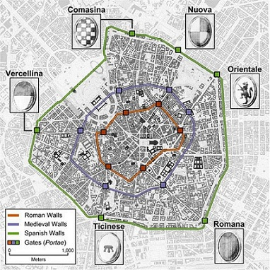
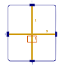

MAPPE DELLA CITTA'
Medioevo
MAPPE DELLA CITTA' NEL MEDIOEVO
Milano è una città di mura.
I lavori degli archeologi ci aiutano a ricreare l'aspetto di Milano in epoche lontane.
Le mura sono state di tre tipi: romane, medievali e spagnole.
Vediamo insieme come erano le tre mura di milano.
CINTA ROMANA (II-III sec)
Milano è una città di fondazione romana: quando i romani arrivavano in un territorio, essi costruivano un castrum, ovvero l'accampamento nel quale risiedeva, in forma stabile o provvisoria, l'esercito romano, dando vita ad una nuova città.
I Romani erano dei buonissimi tecnici. Lo schema urbanistico adottato nella costruzione della città è caratterizzato dall'incontro ortogonale delle strade, cardi (da nord a sud) e decumani (da est ad ovest), che suddividono la città in isolati quadrangolari.
Al centro della città siede il foro, il centro militare e politico della città, per Milano è Piazzetta San Sepolcro.

Nel XI-XII sec Milano viene rasa al suolo da Federico Barbarossa e si costruì una nuova mura: la Mura Medievale.
CINTA MURARIA MEDIEVALE (XII sec)
La nuova cinta muraria venne costruita in pietra e c’era un profondo fossato con alcune torri e 6 porte.
Essa aveva una struttura a stella e al centro c’era il potere religioso dove c’era il Duomo, la cattedrale più importante.
Le abitazioni erano ravvicinate e le strade erano strette e permettevano il passaggio di una persona alla volta per garantire un controllo migliore della città.
Questa cinta era quasi a forma circolare ed era circondata dalla cerchia dei Navigli.
In questo periodo si sviluppa il contado, che permetteva l’approvvigionamento della città, esso non si trovava al suo interno ma stava all’esterno.

CINTA MURARIA SPAGNOLA (XVI)
In quest’epoca la Lombardia era dominata dagli Spagnoli.
Vennero rafforzate le mura medievali, che diventavano più spesse e resistenti per una migliore difesa, poiché venivano utilizzate nuove armi durante gli attacchi.
Queste mura (dette Bastioni) permettevano il passaggio di più soldati alla volta; accanto ad esse vennero costruite le pusterle, vie d’accesso secondarie che permettevano il passaggio delle persone, e 12 porte.
Alla metà del 700 le mura spagnole non erano più utili e dunque vennero demolite.